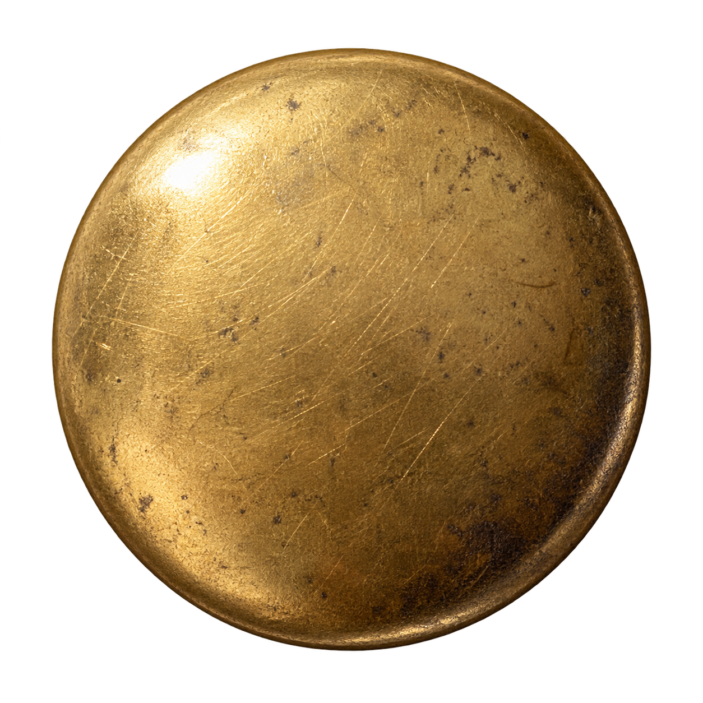
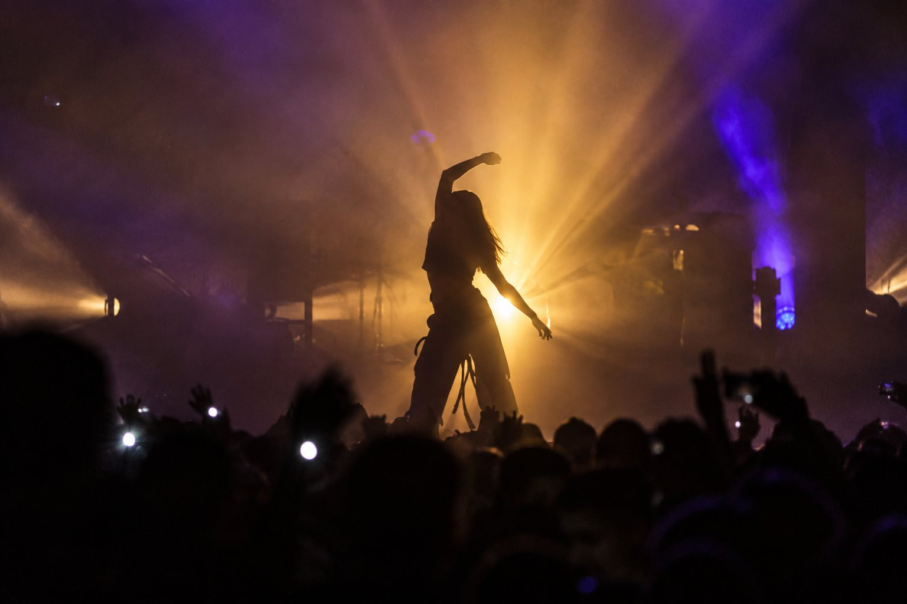
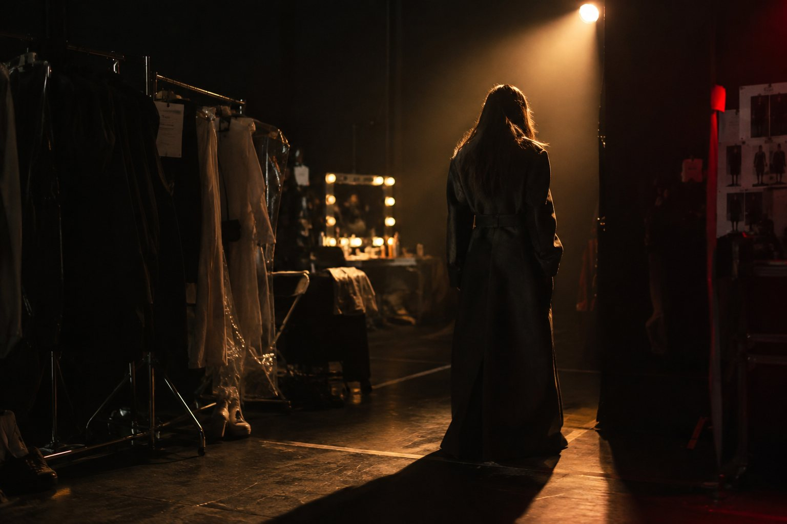
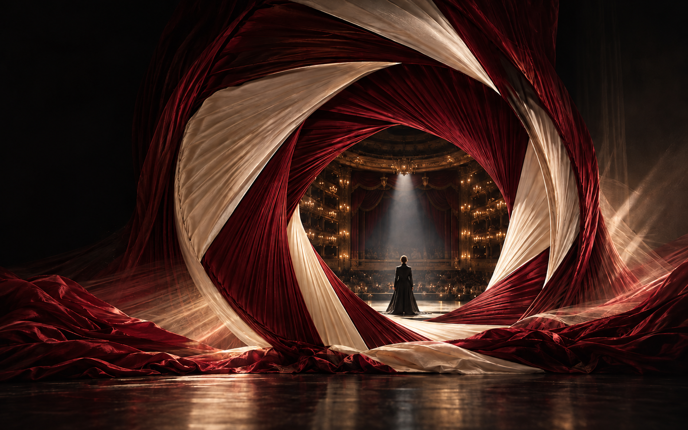
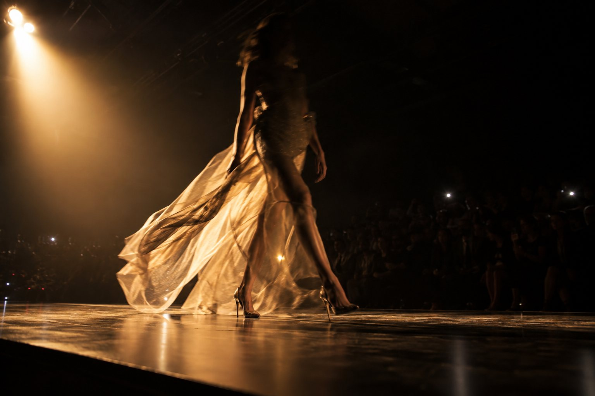
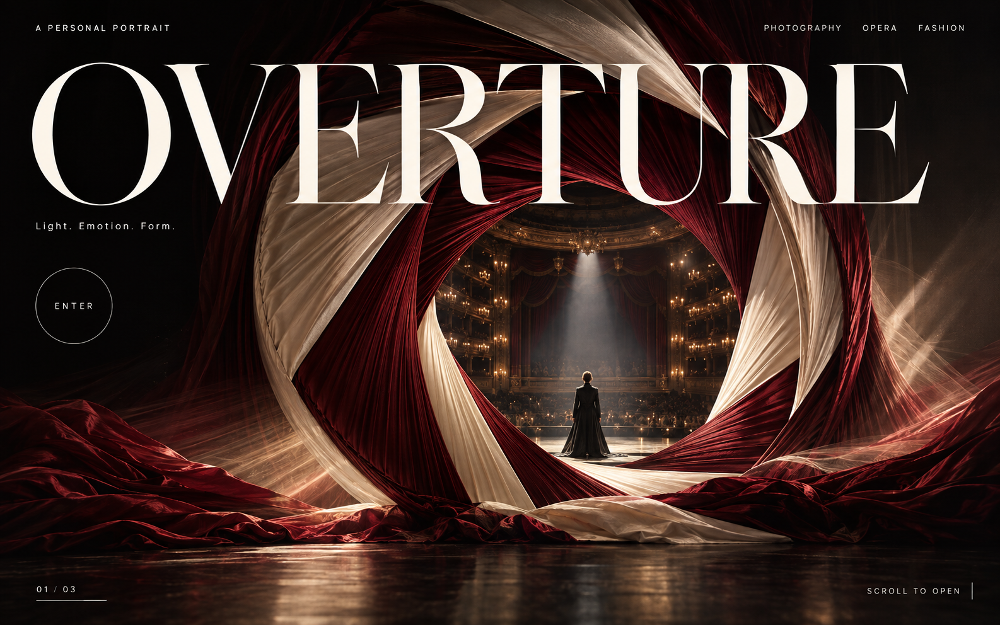
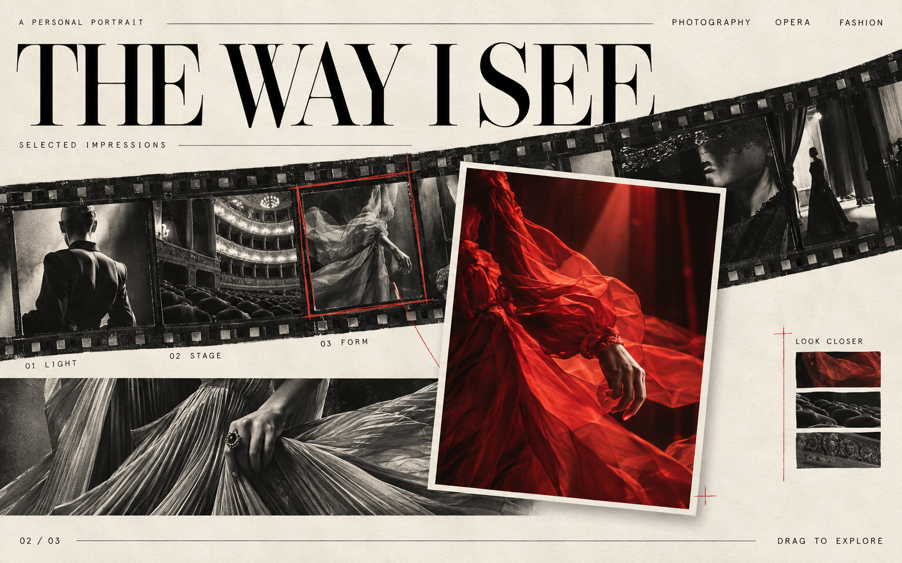
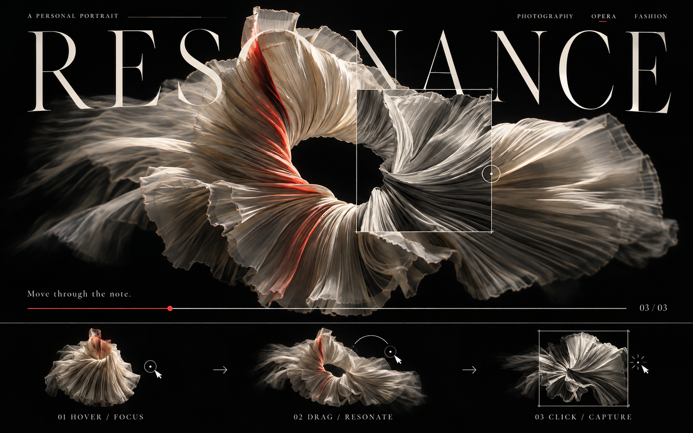
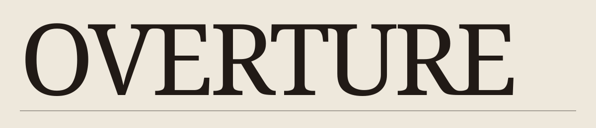
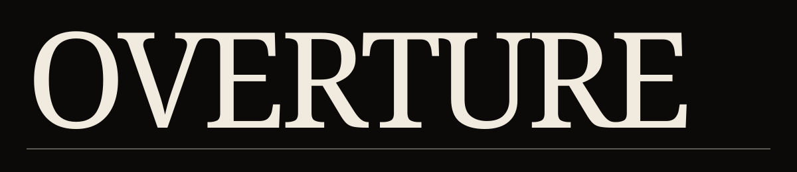

ov-bg
stage #0c0a09paper #eee8dcnocturne #0a0f1f
页面背景
摄影的观看、歌剧的情绪与时装的形式，共同组成一套可在本机运行的原生网页和品牌设计体系。1.3.0 有 46 种组件，分属七个家族：动作与导航、表单与选择、浮层与披露、反馈与进度、内容与数据、影像与 GPU、品牌与版式。三套主题（Stage 暗场、Paper 印纸、Nocturne 夜场），两种光温（暖光照亮内容，冷光标记焦点）。
三张用户选定的视觉图是本体系的源头。由此延伸出三个动作：开幕、显影、共振，并通过追光、走片与冲印串起连续的观看动作。它们既服务于大型视觉，也服务于按钮、选择、输入、反馈和内容阅读。1.3.0 给三个动作各配一个运动原语——光圈、显影、弹簧——由 Overture.motion 统一驱动全部组件的动态，另有默认关闭的合成交互声音。
Stage 暗场用于剧场、沉浸作品与品牌主视觉。Paper 印纸用于档案、表单、资料与编辑版式。Nocturne 夜场用于夜间档案与冷光叙事，结构与暗场相同，底、面和线换成午夜蓝。三者共用色彩角色、几何、字体与动作语法；朱红只承担明确的选择、校样和行动含义，冷光只表示光与注意力落在哪里。
先选择内容与交互需求，再选择对应组件。一个区域只保留一个主动作；不把所有按钮都做成光圈，也不让所有文字都漂浮。图像要有真实可辨的主题，细线要有定位用途，大字要为内容让出空间。
这些组件使用原生 HTML 语义与 CSS 变量。三维画面使用本地 three.js，优先 WebGPU，自动回退 WebGL2。浏览器无法初始化图形设备时仍保留图像和常规控件。有关接入、键盘、生命周期与性能边界，见后续规范章节。
双击系统目录里的 START.cmd，或运行 node tools/serve.mjs，然后打开 http://127.0.0.1:4198/：/ 是四幕展示，/light-studies.html 是追光实验与暗房，/components.html 是组件库，/studio.html 是品牌工坊，/catalog/ 就是这一页，/overture-showcase.html 是可以单独拷走、双击离线打开的单文件动态演示。这一页由 ds-viewer 从 project/ 生成，不要手改生成结果。
00 · FILM
配乐 A。一束光串起五幕：开幕、聚焦、显影、张力、凝住。点击章节跳到对应的一幕。
01 · GRAMMAR
整个体系只用三种动作：开幕／遮挡、聚焦／显影、张力／凝住。每个组件都由它们组合而成。下面三个都是可以直接操作的真实组件。
02 · WARM & COLD
暖光照亮内容，冷光勾出焦点。悬停和聚焦是冷光，确认、选中和错误是朱红。用指针和 Tab 键试一试，右侧会记录每次交互属于哪种光温。
03 · STAGE / PAPER / NOCTURNE
同一组组件，同一份代码，只改 data-theme。朱红在三套主题里意义不变；夜场把底、面、线换成午夜蓝，冷光更明显。侧栏的主题按钮会切换整页，这里三套并排固定显示。
04 · NEW IN 1.2
三维 35 mm 暗盒。横向拖动胶片拉出或卷回，卷轴和标签随之转动；把一帧向下拖到桌面，它会带着象牙边框成为相纸并显影。双击相纸放回胶片。
05 · COMPOSITION
七个操作组件共同控制同一张相纸：选片、曝光、黑白、编号、题名和冲印。冲印会在本机生成一张 1200 × 1200 PNG，并把缩略图放进纸托。
06 · MOTION
三种时长和一条缓动负责声明式过渡；五种弹簧负责有质量的运动。弹簧用解析解计算，中途改目标时保留位置与速度；CSS 的 --ov-spring、--ov-settle 由同一组常数生成。所有动效都尊重减少动态，也可以在这里手动切换。
07 · BRAND COMPOSER
四种视觉语言（光圈剧场、印纸显影、褶皱共振、夜场冷光）乘四种画幅。编辑标题后直接在本机导出 PNG，或录制 6 秒无声 WebM。
08 · QUICK START
一个 CSS、一个 JS、一个素材目录。dist 文件夹可以整体拷走，断网也能运行；也可以只带走一个文件：overture-showcase.html 内嵌了全部样式、脚本、字体、照片、three.js 和宣传片。
Guideline · guidelines/10-foundations.md
OVERTURE 光圈舞台、THE WAY I SEE 接触印样、RESONANCE 褶皱雕塑三张参考图位于素材中的 references 组。新增组件继承它们的材质与尺度，不引入另一套通用圆角卡片。
Bodoni Moda Regular 是品牌大字；使用很强的粗细对比与紧凑字距。Manrope 为英文操作文字，中文正文使用 Microsoft YaHei 等本机无衬线字体；中文大标题回退宋体。字体在包中自托管。大标题能越过 96px，但必须检查完整文本与窄屏，不把文字裁断成无法阅读的装饰。
Stage：近黑与象牙白，以深红衣料承载图像，朱红作为交互信号。Paper：暖白印纸与近黑文字，深朱红用于可读的强调。Nocturne：午夜蓝底与冷白文字，朱红不变。
冷光 ov-cold 是第二光温：聚焦、悬停取景角、光束边缘、信息提示。朱红 ov-accent 表示动作与选中。悬停时冷，选中后红。深蓝 ov-indigo 与深红 ov-oxblood 同为材质色，不作正文。正文使用 ov-text，说明使用 ov-muted；ov-subtle 仅用于装饰和禁用。不要把深红材质色当作暗底正文。
相纸、输入、面板使用直角。圆形用于进入、播放、聚焦等单一动作；开关轨道可使用圆端。细线优先 1px，取景角长度 20px。只有被抽出的相纸和浮层使用柔和偏移阴影。
状态必须同时有语义与视觉：aria-pressed、aria-selected、aria-checked、aria-expanded、aria-invalid、disabled 与对应样式。红色不是唯一通知渠道，提供文字、取景角或形状变化。正文、冷光与聚焦色按三套主题检查（测试要求不低于 4.5:1），操作目标至少约 44px。
Guideline · guidelines/20-interaction.md
三个动作语法各有一个运动原语，全部由 Overture.motion 提供：开幕是光圈，显影是显影，共振是弹簧。组件不自带缓动或回弹。
从遮挡到呈现，用在进入、展开、确认和转场。遮罩始终对应内容变化；动作完成后停下。
iris(el, {open, origin, shape})：以 origin（触发控件或一个坐标）为圆心的圆形光圈，另有 shutter（快门）与 unfold（展开）两种形状。退出约为进入的 0.6 倍时长，用 --ov-exit 加速离场；中途打断从当前裁切继续。Overture.setTheme(theme, root, {origin})。黑白代表等待观看，彩色代表聚焦或锁定。
develop(el)：从过曝黑白显影到正常，用在新出现的内容（关键词、提示、选中的图片）。flip(scope, selector, mutate)：重排时保留身份，从旧位置移到新位置（表格排序、关键词增删）。count(el, text, dir)：数字按增减方向翻片（Stepper、Pagination、照片墙计数）。用张力、幅度和衰减表达连续变化。spring({preset}) 是阻尼谐振子的解析解：中途改目标时保留位置与速度，freeze() 冻结位移与速度，解冻后同一次运动继续。
| 预设 | 静止 | 用于 |
|---|---|---|
| snap | 340 ms，过冲约 3 % | 拨杆、勾选、刻度针、取景框、按压、翻片 |
| settle | 570 ms | 相纸落位、底片带、FLIP、灯箱、侧幕 |
| stage | 830 ms | 光圈开幕、照片墙运镜 |
| resonance | 周期 0.53 s | 丝绸松手后的回荡 |
| swing | 周期 1.05 s | 图钉相纸被拂过后的摆动 |
SilkResonance 是参数化曲面，不是物理布料求解器；张力走 resonance 弹簧，松手时带着速度越过新张力来回几次，凝住停在回荡中途。胶片两端有橡皮筋阻力并回弹；相纸落桌时位置走 settle、角度走 snap。只有真实材料（丝绸、挂着的相纸）才明显欠阻尼，控件只允许约 3 % 的过冲。
--ov-fast 160 ms 用于确认，--ov-time 420 ms 用于显影，--ov-slow 900 ms 用于大型开幕，统一采用快速响应、缓慢稳定的 --ov-ease。CSS 里的 --ov-spring 与 --ov-settle 是由 snap、settle 两个弹簧生成的 linear() 缓动，与脚本里的运动是同一组常数；不支持 linear() 的浏览器退回普通缓动。
Overture.sound 提供八种 Web Audio 合成声音（齿轮、快门、拨杆、相纸、落桌、丝绸、光圈、移光），默认关闭，Overture.setSound(true) 后才会发声，并按元素的水平位置左右声像。声音不替代视觉与文字反馈，不自动播放。CuePlayer 的三个正弦振荡器是 12 秒原创合成音色示意，不是假称录制的歌剧片段。
组件默认遵循系统减少动态。Overture.setMotion(mode) 的 mode 可为 'full'、'reduce' 或 'system'，查询参数 ?motion=full 也可以显式选择。减少动态时弹簧直接落位，光圈与显影跳过，GPU 持续动画和示波等循环停止；照片墙运镜、追光移动这类空间切换改用 dissolve(el, swap) 淡出淡入，在最暗时完成切换，不做位移或缩放。Windows 关闭“显示动画”时浏览器同样报告减少动态；只为展示动效的页面（如单文件演示页）可以默认 setMotion('full')，并提供切换。触屏保留原生纵向滚动，用显式控件代替只有 hover 才可发现的功能。不可只依赖鼠标指针位置完成任务。
Guideline · guidelines/30-api.md
复制 dist 中 overture.css、overture.js 和整个 assets/ 目录到你的项目。多文件接入时图形模块需要 HTTP 本地服务；不要依赖 file:// 的跨文件模块加载。只需要一个离线文件时，用 dist/overture-showcase.html 的做法：素材以对象 URL 提供给 configure({assets})，图形引擎经 configure({loadEngine}) 加载。
<link rel="stylesheet" href="overture.css">
<script src="overture.js"></script>
<div id="host"></div>
<script>
Overture.configure({ assetBase: 'assets/' });
const instance = Overture.mount('Range', '#host', {
label: '开度', value: 70,
onChange: ({ value }) => console.log(value)
});
</script>mount(name, host, options) 返回 {element, state, getState(), setValue(value), destroy()}。host 可为元素或 CSS 选择器。挂载只追加当前组件，不替你删除其他内容。onChange(detail) 接收状态变化；对应 DOM 事件为冒泡的 ov:change，detail 另含 component 名称。会初始化数值的组件可能在 mount 内触发一次 onChange。setValue 只对组件文档中明确声明的可控组件生效。其他组件由原生控件或传入回调控制。destroy() 可重复调用；释放事件、定时器、观察器、图形资源、对象 URL、声音和录制流。setTheme('stage'|'paper'|'nocturne', element, {origin}) 给一个作用域设定主题；默认作用于根元素。作用于根元素并给出 origin（控件或坐标）时，新主题以光圈从那里扩散（View Transitions；不支持或减少动态时直接切换）。nextTheme(element, {origin}) 按暗场 → 印纸 → 夜场循环。单个组件也可传 theme。configure({assetBase, motion, backend, assets, loadEngine}) 的 assetBase 以斜杠结尾；backend 支持 auto、webgl、static；assets 把素材名映射到自带 URL（单文件用）；loadEngine 替换图形引擎的加载方式。请在挂载前配置。Overture.motion.spring({preset, value, onUpdate, onRest}) 返回 {to(target, {velocity, preset}), set(value), impulse(dv), freeze(on), finish(), stop(), value, target, velocity, moving, frozen}。to() 返回 Promise：这一段静止时为 true，被新目标取代时为 false。value 可以是数字或数组。预设：snap、settle、stage、resonance、swing。Overture.motion.iris(el, {open, origin, shape:'circle'|'shutter'|'unfold', duration}) 返回 Promise；关闭后裁切保留到调用 release(el)。develop(el)、flip(scope, selector, mutate)、count(el, text, dir)、imprint(el) 用于显影、重排、翻片与压印；dissolve(el, swap, {duration, color}) 是减少动态时的空间切换：淡出、在最暗时执行 swap、再淡入。easing('snap'|'settle')、time(name) 给出与弹簧一致的 CSS 缓动和时长。Overture.setSound(true|false) 开关交互声音；Overture.sound.play(name, {at, gain, force}) 播放一种声音（force 用于用户明确要求的试听）。声音默认关闭。组件类名为 ov-*，变量为 --ov-*，字体家族为 --font-display、--font-sans。主题通过 data-theme 继承，常规文字保留原生 DOM。两种主题属于同一体系，可以在不同内容区域明确切换。
调用 Overture.define(name, factory) 注册组件。factory 收到 options 与 context：listen 为自动清理的事件，timeout 为可清理计时，cleanup(fn) 注册销毁，emit(detail) 发布状态，child 挂载随父级销毁的组件。工厂返回一个 HTMLElement。
用户提供的文本必须经 Overture.escape 或 textContent 写入。异步回调检查 context.alive；不要把组件的临时状态写进工作区全局设置。
Guideline · guidelines/40-gpu.md
three.js 0.186.1 的 WebGPURenderer 会优先尝试 WebGPU，再使用 WebGL2。库的两个运行时文件随包保存，无 CDN 请求。依据：three.js 官方说明。
| 组件 | 实现 |
|---|---|
| ApertureStage | TSL 材质采样生成的无文字舞台照片，开度遮罩、位移和视差；不是完整建模的三维歌剧院 |
| DevelopImage | TSL 黑白／彩色混合：hover 控制光斑半径（弹簧驱动的进出），active 控制从 origin 漫开的显影液，前沿有一道暖色显影线 |
| SilkResonance | 160 × 100 分段曲面；透明织物图像保留细褶与光照；TSL 顶点波动、张力扭转与轻微视差。属于 2.5D 图像曲面，不是可自由环绕的完整三维布料 |
| BrandComposer | Canvas 2D 排版器，组合相同图像资产和实时 GPU 画面；本机 PNG / WebM 导出 |
像素比默认上限 1.5，舞台持续运动限制为约 40 fps。不可见或页面隐藏时暂停绘制；减少动态时保留静止造型，并在用户操作时重绘。组件销毁时释放 renderer、geometry、material、texture、RAF、观察器与监听器。
大型 GPU 场景尽量每屏一个。不要把每个表单控件都变成 canvas。组件目录包含光圈、显影、织物、追光和照片墙等 GPU 场景及工坊；常规组件全部保留原生 HTML，适于更广的浏览器和辅助技术。
?backend=webgl 强制 WebGL2，?backend=static 检查静态替代，?motion=reduce 检查减少动态。宿主元素的 data-renderer 报告实际后端。初始化失败保留图像或参考静帧，不把空画布当成成功。
WebGPU 需要浏览器支持与安全上下文；本地使用 127.0.0.1，或直接以 file:// 打开单文件演示页（file:// 同样是安全上下文）。单文件把 three.js 与引擎以 gzip 内嵌，运行时解压成对象 URL 再按依赖顺序导入；浏览器没有 DecompressionStream 时进入静态模式。追光遮罩新增 iris 参数与 setBeam(x, y, v, k)：光束在灯位之间移动时，位置、开度与收窄一次更新、绘制一次。GPU 性能和品牌质感是两种不同验收：没有报错不代表已经达到图像参考的视觉水平。
Guideline · guidelines/50-brand.md
品牌字标不另添复杂图标，用文字的尺度建立识别。三种版式是：黑色全幅光圈剧场、印纸与斜向底片、黑场中漂浮的象牙白褶皱。大字尽量维持一行；内容较长时缩小或主动换行，不裁断句子。
BrandComposer 提供 1920 × 1080 网页横幅、1080 × 1350 海报、1080 × 1920 竖屏、1080 × 1080 方形。可以修改标题、副标题、视觉场景与动势。PNG 是静态输出；支持 captureStream / MediaRecorder 的浏览器可以录制 6 秒无声 WebM。
录制期间保持页面可见，参数暂时锁定。WebM 是浏览器视频输出，不声称兼容所有剪辑软件。这里不生成 MP4，不自动上传或发布任何素材。
字体为随包保存的 OFL 字体，许可随文件提供。示例照片为 AI 生成的艺术素材，不是实际品牌拍摄案例。后续正式企划应替换为自己的内容和落款。工作名 Overture 不代表已经完成商标检索。
宣传画面必须维持参考图中的材质密度和文字尺度。光圈是开场，显影是选择，共振是持续的感官反馈。不是每张海报都需要三个效果同时出现；先明确这张作品的主动作。
Guideline · guidelines/60-structure.md
本体系将基础令牌、组件、状态、使用情景和组合案例分开维护。参考 GOV.UK Design System 组件 对用途与使用说明的组织；参考 Material 的交互状态 检查默认、聚焦、选中、禁用等状态覆盖。没有复制它们的颜色、组件外观或版式。
工作区内参考了 Safelight 的小型交互原语、Lattice 的组件与令牌文件布局、Ash & Dice 的本地构建和 GPU 接入。它们都保持不变；Overture 是独立体系。
project/tokens.json 是基础变量来源；src/catalog-data.mjs 是组件登记与用法来源；src/ 是实现。构建同步运行时、组件卡、逐组件说明、站点与 ds-viewer 目录。避免维护多套相互漂移的示例代码。
Guideline · guidelines/70-light.md
两个追光组件把摄影中的两件事分开：移动光与移动观看的位置。页面示例见 /light-studies.html；所有素材与运行依赖均保存在本机。
FlashlightFocus 保持整面六张照片固定且同时可见。每三格滚轮切换一张：前两格显示 1 / 3、2 / 3 并保持灯位，准星像对焦环一样每格转 30°；第三格光束沿 settle 弹簧移到下一张照片中心（约 570 ms），途中收窄到约 70 %、到达后张开。六个中心是光束唯一的停留位置；连续滚动时从当前位置和速度接着移动。减少动态时不移动，改为淡出淡入。灯位仅有六个固定位置，不经过中间位置；尺寸变化后仍对准对应照片。反向输入重新累计三格，首尾向外滚动释放页面。开度由独立滑块调整。方向键、Home/End、前后按钮及一次触屏滑动直接切换一张。
const light = Overture.mount('FlashlightFocus', '#host', { value: 25 });
light.setValue(65); // 改变光束开度，0–100
// mode:'page' 使用一屏高的照片墙；默认 contained 使用固定高度面板。PinnedPhotoWall 中的光束始终位于视口中央。DOM 照片、图钉和 SVG 红线形成一个宽阔的空间；普通鼠标每两格滚轮移动一张照片。第一格显示 1 / 2，第二格由 stage 弹簧运镜到下一张（位置进入 0.5 % 约 790 ms）；连续输入保留镜头速度，不在中途停顿；镜头移动时略后退，到达时推近。减少动态时不运镜，改为淡出淡入到下一张。触控板的小输入累计为两格，改变方向时清除旧方向半步；每个大滚轮事件最多计一格，避免一次甩动跳过整个照片墙。
// 独立卡片/面板：在组件内以两格滚轮切换。
const panel = Overture.mount('PinnedPhotoWall', '#panel');
// 沉浸页面：一屏高的停靠照片墙，首尾向外滚动可离开。
const story = Overture.mount('PinnedPhotoWall', '#story', { mode: 'page' });
story.setValue(2); // 运镜至第三张照片两面墙上的相纸都挂在图钉上：指针拂过时按横向速度和触点离图钉的距离得到一次角速度，swing 弹簧让它绕图钉摆动后停下（触屏不触发）。
两种模式都提供上一张、下一张和照片索引。方向键、Page Up/Down、触屏纵向滑动直接切换一张，Home/End 到首尾。到边界后继续向外滚动或滑动会释放页面，不形成滚动死角。减少动态时直接落位；连续输入从当前镜头位置接替动画。
ContactSheet 默认每 4800 ms 进入下一帧。两层完整相纸包含照片、边框、题名及套准标记，一起位移和旋转：旧纸 700 ms 退出，新纸 1050 ms 落位。底片齿孔随胶片条一起移动，载片框同步用 1000 ms 回位。新的输入取消并接替上次动画，只保留两层纸。默认值可通过 autoplay:false、interval、index 配置。悬停底片或主相纸、键盘聚焦照片、离屏、页面隐藏和减少动态均停止自动走片；提供暂停/继续按钮。自动换片不移动键盘焦点或触发 live-region 播报。
暗房操作台复用 StageTabs、Range、Stepper、TextField、Switch、Check、CueButton。取景框在分类间移动，曝光刻度驱动画面亮度，数字翻片更换底片，机械拨杆控制取景线，确认标记决定手记是否保留。快门按钮实际导出 1200 × 1200 PNG，并把缩略印相放入纸托。所有数据只在本页保留，重新加载会重置。
追光使用 TSL 全屏透明遮罩；优先 WebGPU，回退 WebGL 2。光照按输入或尺寸变化重绘，光束移动期间每帧用 setBeam(x, y, 开度, 收窄) 一次更新并绘制一次，没有常驻动画循环，DPR 上限 1.25。无法初始化 GPU 时使用 CSS 径向遮罩，灯位、开度、滚动及键盘仍可用。光照是覆盖在可访问 DOM 照片上的视觉处理，并非物理光线追踪或真实体积散射。材质颜色属于暖黑、褐纸、象牙相纸和朱红线的同一光照空间，不改变表单和文字的语义颜色令牌。
14 tokens · Stage · 暗场 / Paper · 印纸 / Nocturne · 夜场.
--font-displayAa 永 123"Bodoni Moda", "Times New Roman", "SimSun", serif--font-sansAa 永 123"Manrope", "Microsoft YaHei", sans-serif--font-zhAa 永 123"Microsoft YaHei", sans-serifov-space-44pxov-space-88pxov-space-1212pxov-space-1616pxov-space-2424pxov-space-3232pxov-space-4848pxov-space-6464pxov-space-9696pxov-space-144144pxov-radius0pxov-round50%ov-print-shadow{"stage":"0 18px 50px rgb(0 0 0 / .45)","paper":"0 16px 36px rgb(45 25 12 / .2)","nocturne":"0 18px 50px rgb(2 4 14 / .6)"}ov-fast160ms触发确认ov-time420ms显影与展开ov-slow900ms开幕与深层转场ov-easecubic-bezier(.16,1,.3,1)有阻尼的稳定落位ov-exitcubic-bezier(.5,0,.75,0)退出：加速离开；时长约为进入的 0.6 倍ov-springlinear(0, 0.051, 0.17, 0.319, 0.472, 0.613, 0.734, 0.832, 0.906, 0.959, 0.995, 1.017, 1.029, 1.033, 1.032, 1.029, 1.024, 1.019, 1.014, 1.01, 1.007, 1.004, 1.002, 1.001, 1)snap 弹簧的 CSS 缓动：拨杆、勾选、取景角、按压；与 ov-spring-time 配合ov-spring-time340mssnap 弹簧静止所需时间ov-settlelinear(0, 0.029, 0.099, 0.191, 0.291, 0.392, 0.487, 0.573, 0.65, 0.717, 0.773, 0.82, 0.859, 0.891, 0.917, 0.937, 0.953, 0.966, 0.975, 0.983, 0.988, 0.992, 0.995, 0.997, 1)settle 弹簧的 CSS 缓动：落位、排序、翻转ov-settle-time570mssettle 弹簧静止所需时间阻尼谐振子（质量 1）。Overture.motion.spring({preset}) 使用这些常数；CSS 用 ov-spring / ov-settle 两个 linear() 缓动。
ov-spring-snapstiffness 600 · damping 36控件、刻度针、取景框、计数翻片：约 340 ms 静止，过冲约 3 %ov-spring-settlestiffness 120 · damping 20相纸、胶片、浮层、FLIP：约 570 ms，无可见过冲ov-spring-stagestiffness 52 · damping 13.2运镜与开幕：约 830 ms；照片墙两格一张的运镜ov-spring-resonancestiffness 140 · damping 3.2丝绸松手后的回荡：周期 0.53 s，约 2 s 内可见ov-spring-swingstiffness 36 · damping 1.8图钉相纸被拂过后的摆动：周期 1.05 s用展开动作分配说明文字的阅读深度。
FAQ、规范、设置分组。
关闭、展开、原生 details/summary 键盘行为。1.3：展开与收起都有高度过渡，正文淡入淡出（浏览器支持 interpolate-size 时）。
const instance = Overture.mount('Accordion', host, {});
// 监听 instance.element 的 ov:change。移除时调用 instance.destroy()。items:[[title,body]]；事件含 index/open。
幕布暂时退暗，给需要确认的当前动作完整焦点。
需要中断和保护焦点的编辑确认。
打开、取消、Escape、校验、保存、焦点返回。1.3：从触发按钮以光圈张开；按钮、取消、Escape、遮罩、保存五条路径都先退回按钮再关闭；遮罩淡入淡出。
const instance = Overture.mount('Dialog', host, {});
// 监听 instance.element 的 ov:change。移除时调用 instance.destroy()。label, title；原生 dialog；示例保存只作用于页面。
展开侧幕编辑说明，仍保留原作品的上下文。
短表单、作品信息、局部编辑。
打开、编辑、保存、取消、关闭。1.3：侧幕以 settle 弹簧滑入，内容稍后跟上；任何关闭方式都滑出。
const instance = Overture.mount('Drawer', host, {});
// 监听 instance.element 的 ov:change。移除时调用 instance.destroy()。label, title；原生模态焦点，移动端适配屏幕宽度。
在触发点旁展开少量设置，不打断页面。
取景、筛选与局部偏好。
展开、关闭、外部点击、Escape、选项改变。1.3：从触发按钮张开，关闭时先折回再隐藏。
const instance = Overture.mount('Popover', host, {});
// 监听 instance.element 的 ov:change。移除时调用 instance.destroy()。示例包含两个原生复选框；事件含 option/value。
悬停和键盘聚焦时提供简短的动作说明。
解释图标；必要信息不可只放提示内。
悬停、聚焦、离开；aria-describedby。
const instance = Overture.mount('Tooltip', host, {});
// 监听 instance.element 的 ov:change。移除时调用 instance.destroy()。text；不装载复杂交互内容。
由原始图像资产与 GPU 采样、开度遮罩和视差共同组成。
整页开幕、品牌片头、进入作品。
开度调节、鼠标视差、进入/退回、静态降级。1.3：开度由 stage 弹簧驱动（约 0.83 s），滑杆与滚动联动 snap／settle 跟随，视差带惯性。
const instance = Overture.mount('ApertureStage', host, {});
// 监听 instance.element 的 ov:change。移除时调用 instance.destroy()。chrome, value；setValue(0..100)。照片底图不是完整三维剧院。
同一图像的黑白和彩色由一条可控分界线比较。
前后对比、调色说明、工艺变化。
拖拽、键盘、分界值说明。1.3：分界线以 snap 弹簧跟随。
const instance = Overture.mount('CompareLens', host, {});
// 监听 instance.element 的 ov:change。移除时调用 instance.destroy()。src；setValue(0..100)；原生 range 控制。
底片与齿孔自动循环走片，焦点逐帧移动；照片、相纸边框、题名和套准标记共同换位。
作品浏览、系列筛选、图像选择。
自动循环、暂停/继续、悬停/聚焦停格、离屏暂停、键盘与减少动态。1.3：底片带 1:1 跟手拖动，甩出后按速度停在最近一帧（settle 弹簧承接速度）。
const instance = Overture.mount('ContactSheet', host, {});
// 监听 instance.element 的 ov:change。移除时调用 instance.destroy()。items:[[file,title,category]], autoplay:true, interval:4800, index:0；setValue(index)。自动播放不播报 live region，不移动键盘焦点。
三音合成声音片段让声响、时间线和播放状态相连。
声音作品入口；这里只提供原创合成音色示意。
播放、暂停、续播、拖动进度、静音、结束。
const instance = Overture.mount('CuePlayer', host, {});
// 监听 instance.element 的 ov:change。移除时调用 instance.destroy()。默认 12 秒，不自动播放；组件销毁时关闭 AudioContext。
GPU 让光斑附近从黑白显影为彩色：光斑带惯性跟随、进出时张缩；选中时显影液从按下的点漫开到整幅。
照片预览、可选择的视觉内容。
移动显影、键盘聚焦从中心漫开、选中/取消、降级。1.3：光斑、漫开都由弹簧驱动，漫开前沿有暖色显影线。
const instance = Overture.mount('DevelopImage', host, {});
// 监听 instance.element 的 ov:change。移除时调用 instance.destroy()。src, alt, caption, label；aria-pressed 表示选中。
三维 35 mm 暗盒里拉出一卷胶片：横向拖动拉出或卷回，卷轴随之转动；把一帧向下拖出，它会作为相纸落到桌面并显影。
作品集入口、系列浏览、从一组照片中挑选并收藏若干张。
拖动／滚轮／方向键拉片，放手后带惯性；悬停冷光取景并显色；向下拖出成相纸，未到桌面则弹回原位；桌面相纸可拖动摆放，双击、回车或退格放回胶片；空位显示为透明片基；WebGPU / WebGL2 暗盒与 CSS 静态暗盒降级；减少动态时无惯性、无显影动画。1.3：拉过两端有橡皮筋阻力并回弹，甩到尽头会弹回；相纸落桌以 settle 弹簧定位、snap 弹簧转正，并有一次落地压缩；方向键拉片走弹簧。
const instance = Overture.mount('FilmCanister', host, {});
// 监听 instance.element 的 ov:change。移除时调用 instance.destroy()。items:[[file,title,category]], roll:'ROLL 01', dates:'FEB 2026 — JUN 2026', pulled:3.2（初始拉出帧数）；setValue(0..100) 设置拉出长度；ov:change 返回 pull、turn、out（已冲印的帧序号）。
整面六张照片墙固定可见；每三格滚轮切换一张，光束只停在六张照片中心。
摄影作品浏览、品牌视觉探索、局部内容发现。
三格一张、0/3 至 2/3 计数、固定灯位、反向重计、首尾释放滚动、触屏/键盘逐张切换、独立开度、GPU / CSS 降级。1.3：前两格转动准星（对焦环）；第三格光束沿 settle 弹簧移到下一张照片中心，途中收窄、到达张开，只在六个固定灯位停留；减少动态时淡出淡入；指针拂过相纸时绕图钉摆动。
const instance = Overture.mount('FlashlightFocus', host, {});
// 监听 instance.element 的 ov:change。移除时调用 instance.destroy()。mode:'contained'|'page', value:25, items:[[file,title,category]]；setValue(0..100) 调整开度；ov:change 返回 x,y,value,index,progress,pending。
网格图像经聚焦显影后，进入独立的大图阅读。
摄影、时装作品或演出档案。
悬停、聚焦、放大、前后翻图、Escape 关闭。1.3：打开时照片从缩略图飞到灯箱并显影，关闭时飞回原位；翻页按方向滑入并显影。
const instance = Overture.mount('FocusGallery', host, {});
// 监听 instance.element 的 ov:change。移除时调用 instance.destroy()。items；原生 dialog 和焦点返回；左右键翻图。
固定大光束照在中央，每两格滚轮推动一张照片经过视野；第一格蓄势，第二格运镜落位。
视觉档案、作品故事、品牌时间线、全屏滚动叙事。
两格一张、半步反馈、可打断运镜、首尾释放滚动、索引/键盘/触屏切换、减少动态直接落位。1.3：运镜由 stage 弹簧驱动，连续输入保留速度；移动时镜头略后退，到达时推近；计数翻片；减少动态时淡出淡入到下一张；相纸被拂过时绕图钉摆动。
const instance = Overture.mount('PinnedPhotoWall', host, {});
// 监听 instance.element 的 ov:change。移除时调用 instance.destroy()。mode:'contained'|'page', items:[[file,title,category]]；setValue(index) 切换照片；ov:change 返回 index,progress,pending。page 使用一屏高度；触控板小输入累计为两格。
透明织物图像映射到细分曲面；张力是一根轻阻尼弹簧，松手后带着速度回荡，凝住会停在回荡中途。
品牌主视觉、交互雕塑、参数化艺术。
拖动、张力、键盘、持续运动、凝住、下载、降级。1.3：resonance 弹簧（k 140 · c 3.2，周期 0.53 s）；凝住冻结位移与速度，继续时同一次回荡接着走。
const instance = Overture.mount('SilkResonance', host, {});
// 监听 instance.element 的 ov:change。移除时调用 instance.destroy()。value, chrome；setValue(0..100)；WebGPU 优先、WebGL2 回退。
同一视觉体系内编辑内容、画幅、动势并导出。
网页横幅、竖幅海报、方形品牌宣传。
编辑、画幅/场景切换、PNG、6 秒 WebM、错误反馈。1.3：换画幅时预览从旧画框变形到新画框，换视觉语言时显影。
const instance = Overture.mount('BrandComposer', host, {});
// 监听 instance.element 的 ov:change。移除时调用 instance.destroy()。title, subtitle；导出全在本机，无网络上传。
深红与深蓝两幅幕布从两侧合拢，换幕后分开，避免无意义的漂浮。
有顺序的页面或叙事段落切换。
当前幕、转场、下一幕；减少动态时立即切换。
const instance = Overture.mount('CurtainTransition', host, {});
// 监听 instance.element 的 ov:change。移除时调用 instance.destroy()。示例三幕循环；状态变化通过 ov:change 传递。
图像全幅与大字叠合的直幅品牌版式。
海报、社交封面、系列封面。
静态版式，标题与图像可替换。
const instance = Overture.mount('Poster', host, {});
// 监听 instance.element 的 ov:change。移除时调用 instance.destroy()。title（换行支持）, src。
以字的尺度和细线署名建立段落停顿。
作品宣言、导语、创作观点。
blockquote 与署名语义。
const instance = Overture.mount('PullQuote', host, {});
// 监听 instance.element 的 ov:change。移除时调用 instance.destroy()。text, source；默认文字明确为创作示例。
展示标题与中文正文共同工作的比例。
建立跨语言的标题／正文层级。
长标题换行、窄屏缩放。
const instance = Overture.mount('TypeSpecimen', host, {});
// 监听 instance.element 的 ov:change。移除时调用 instance.destroy()。text；字体本地托管，中文使用本机字库。
大尺度高对比衬线字标，配合克制的落款。
页首、封面与品牌署名。
响应式缩放；保持足够留白。
const instance = Overture.mount('Wordmark', host, {});
// 监听 instance.element 的 ov:change。移除时调用 instance.destroy()。name, tagline；默认名称是本体系工作名。
用细线方向标记说明当前层级。
档案、作品详情和分类页。
当前位置 aria-current；示例链接发出选择事件。
const instance = Overture.mount('Breadcrumb', host, {});
// 监听 instance.element 的 ov:change。移除时调用 instance.destroy()。items；ov:change 的 value 为所选层级。
有顺序意义的章号成为阅读位置标记。
分幕长页、作品集章节。
当前步骤、聚焦；onSelect 交给应用导航。1.3：朱红下划线按前进方向接力。
const instance = Overture.mount('ChapterNav', host, {});
// 监听 instance.element 的 ov:change。移除时调用 instance.destroy()。items, onSelect(index)。
集中寻找动作，保留可见结果和键盘路径。
工具密集页面的快捷导航。
搜索、有结果、空结果、当前结果、执行、关闭。1.3：从触发按钮以光圈张开并退回；结果逐项显影（最多六项）；Escape 同样有退场。
const instance = Overture.mount('CommandPalette', host, {});
// 监听 instance.element 的 ov:change。移除时调用 instance.destroy()。actions:[{label,value}], onSelect；上下键/Enter/Escape。
圆形或长条按钮，以快门闭合回应确认，支持异步操作的忙碌与失败反馈。
主要动作、进入下一幕、提交本地操作。
悬停、键盘聚焦、禁用、忙碌和完成。1.3：填充从指针进入处张开，按压 snap 回弹；可选快门声。
const instance = Overture.mount('CueButton', host, {});
// 监听 instance.element 的 ov:change。移除时调用 instance.destroy()。label, variant:'circle', disabled, onActivate。
以单一细线图标表达可反复切换的动作。
收藏、锁定、静音等可逆动作。
aria-pressed 双态、焦点、禁用。1.3：悬停填充从指针处张开，按下时图标像印章压下。
const instance = Overture.mount('IconButton', host, {});
// 监听 instance.element 的 ov:change。移除时调用 instance.destroy()。label, icon, value, disabled；setValue(boolean)。
像翻阅底片页一样浏览有限集合。
分页作品、资料清单。
首末页禁用、页码播报、按钮焦点。1.3：页码按翻页方向翻片。
const instance = Overture.mount('Pagination', host, {});
// 监听 instance.element 的 ov:change。移除时调用 instance.destroy()。total, size；setValue(page)，事件含起止索引。
朱红取景框是一个弹簧：按速度拉长、带轻微过冲落定；面板按切换方向展开。
同一上下文中的内容切换。
选中、非选中；左右、Home、End 键；原生 tablist 语义。连续切换保留取景框速度；减少动态时直接落位。
const instance = Overture.mount('StageTabs', host, {});
// 监听 instance.element 的 ov:change。移除时调用 instance.destroy()。items, panels, label；setValue(index)。
细规则线与箭头形成不抢占图像的次级入口。
阅读更多、查看说明、进入详情。
悬停、焦点；提供 href 时为真实导航。
const instance = Overture.mount('TextLink', host, {});
// 监听 instance.element 的 ov:change。移除时调用 instance.destroy()。label, href；不提供 href 时为示例状态。
精确的直角边框与短促落位的确认标记。
多选、偏好、局部开关。
选中、未选中、禁用、聚焦。1.3：勾一笔画出，方框以 snap 弹簧转正。
const instance = Overture.mount('Check', host, {});
// 监听 instance.element 的 ov:change。移除时调用 instance.destroy()。label, value, disabled；setValue(boolean)。
相纸从轮廓变为实色，清楚表明互斥选择。
视觉主题、输出类型、有限方案。
选中、未选中、键盘方向键。1.3：选中压印从指针进入处张开。
const instance = Overture.mount('ChoiceGroup', host, {});
// 监听 instance.element 的 ov:change。移除时调用 instance.destroy()。items, label；事件含 index 与 value。
文件进入取景框；仅在本机预览和验证。
导入 PNG、JPEG、WebP 图片。
空、拖入、选择、成功、格式错误、超大文件。1.3：选中的图片显影进入。
const instance = Overture.mount('Dropzone', host, {});
// 监听 instance.element 的 ov:change。移除时调用 instance.destroy()。10 MB 上限，支持文件选择键盘入口，销毁时释放对象 URL。
镜头式刻度与朱红游标表达连续数值；游标像表针一样带质量跟随，保留原生滑杆与键盘调节。
曝光、音量、开度、材质强度。
拖拽、聚焦、键盘、最小最大、数值输出。游标跟随为视觉，数值输出始终精确；越过刻度有齿感声（可选）。
const instance = Overture.mount('Range', host, {});
// 监听 instance.element 的 ov:change。移除时调用 instance.destroy()。min, max, step, value, label, unit；setValue(number)。
采用原生选择行为，统一底线和方向标记。
有限选项，移动端调用系统选择器。
聚焦、展开、选定。
const instance = Overture.mount('Select', host, {});
// 监听 instance.element 的 ov:change。移除时调用 instance.destroy()。items, label；setValue(value)。
翻片式数字窗口配合有边界的加减，立即回应数量或底片切换。
印刷份数、数量、分段级别。
值变化、边界禁用、屏幕阅读器播报。1.3：翻片按增减方向转动。
const instance = Overture.mount('Stepper', host, {});
// 监听 instance.element 的 ov:change。移除时调用 instance.destroy()。min, max, value, label；setValue(number)。
机械拨杆露出朱红状态窗，让开关像相机上的实体动作一样明确。
立即生效的偏好设置。
开、关、禁用；Space/Enter。1.3：拨杆以 snap 弹簧带轻微过冲落位，按住时下压；可选拨杆声。
const instance = Overture.mount('Switch', host, {});
// 监听 instance.element 的 ov:change。移除时调用 instance.destroy()。label, value, disabled；setValue(boolean)。
把文本整理成可以单独移除的校样标签。
作品关键词、有限标签。
输入、去重、添加、移除、数量上限。1.3：新词显影出现，删去的词被裁掉，其余词 FLIP 到新位置。
const instance = Overture.mount('TagInput', host, {});
// 监听 instance.element 的 ov:change。移除时调用 instance.destroy()。value, label；Enter/逗号添加，Backspace 移除。
多行文字与字数余量，让长表达仍保持简洁。
说明、创作手记、反馈。
空、输入、长度上限、可调整高度。
const instance = Overture.mount('TextArea', host, {});
// 监听 instance.element 的 ov:change。移除时调用 instance.destroy()。label, value, placeholder, maxLength；setValue(text)。
取景角与底线强调输入焦点；错误贴近字段。
邮箱、姓名和短文本。
空、输入、聚焦、禁用、错误、纠正。1.3：出错时朱红线从左侧曝光，提示文字显影。
const instance = Overture.mount('TextField', host, {});
// 监听 instance.element 的 ov:change。移除时调用 instance.destroy()。type, label, value, placeholder, help, error, required, disabled。
编辑档案般的细线表格，支持有意义的排序。
作品清单、批次与状态。
默认、排序升降、行悬停、表头语义。1.3：排序时同一行 FLIP 到新位置，排序箭头翻转。
const instance = Overture.mount('EditorialTable', host, {});
// 监听 instance.element 的 ov:change。移除时调用 instance.destroy()。rows:[{title,category,frames,state}]。
舞台提示单的时间和事件组成清楚的顺序。
活动安排、制作过程、作品历程。
顺序语义；每项都有时间、标题、补充说明。
const instance = Overture.mount('Timeline', host, {});
// 监听 instance.element 的 ov:change。移除时调用 instance.destroy()。items:[[time,title,description]]。
空的取景框告诉用户缺少什么、可以怎样开始。
初次使用、没有作品或搜索无结果。
空、添加示例、成功。1.3：加入的照片展开并显影。
const instance = Overture.mount('EmptyState', host, {});
// 监听 instance.element 的 ov:change。移除时调用 instance.destroy()。title, message；默认动作加入一个本地示例。
缓慢转动的光圈配合内容骨架。
等待素材或内容的短暂状态。
加载、减少动态；状态有文字说明。
const instance = Overture.mount('Loading', host, {});
// 监听 instance.element 的 ov:change。移除时调用 instance.destroy()。label；这是展示加载态的组件，完成时由宿主移除。
朱红细线指出需要关注的状态，并给出恢复动作。
可恢复错误、缺少素材、下一步说明。
待处理、执行恢复动作、已解决。1.3：解决后内容显影。
const instance = Overture.mount('Notice', host, {});
// 监听 instance.element 的 ov:change。移除时调用 instance.destroy()。title, message, action；使用文字而不只依赖颜色。
Expose、Develop、Fix 三个过程映射可见进度。
明确总量的任务；也可由外部真实进度驱动。
开始、暂停、继续、完成、重置。1.3：每步 4 % 由 settle 弹簧连成连续推进，运行时前沿有冷光。
const instance = Overture.mount('Progress', host, {});
// 监听 instance.element 的 ov:change。移除时调用 instance.destroy()。value；setValue(0..100)。默认是有明确标识的进度示例。
像显影后的印记一样确认动作，并提供撤销。
轻量、可逆的操作结果。
出现、撤销、关闭、超时；悬停/聚焦时保留。1.3：快门式出现与消失；底部细线显示剩余时间，悬停或聚焦时暂停并在离开后继续。
const instance = Overture.mount('Toast', host, {});
// 监听 instance.element 的 ov:change。移除时调用 instance.destroy()。示例收藏只保存在组件状态；role=status。
backstage-mirror.jpg148.6 KB
brass-pin.png2107.9 KBcamera-hands.jpg120.6 KB
dance-stage.jpg100.0 KB
hero-backstage.jpg117.3 KB
overture-art.png2128.3 KBred-silk.png2016.2 KB
resonance-silk.png2471.9 KB
runway.jpg118.7 KB
stage-bow.jpg188.6 KBtextile-panorama.png2921.0 KB
01-overture.png2149.0 KB
02-contact-sheet.png2530.6 KB
03-resonance.png1989.1 KB
overture-wordmark-paper.svg58.8 KB
overture-wordmark-stage.svg58.8 KBoverture-promo-15s.mp48403.7 KB